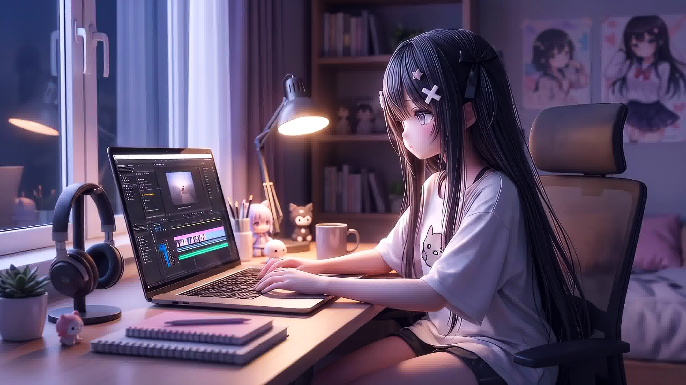

YOUR VISION. MY TIMELINE.
Whatever the footage, we can probably make something fire out of it. Choose the exact craft for your audience.
REELS THAT HIT DIFFERENT
Reels, TikTok, YouTube Shorts engineered for retention.
- check_circle Talking-head cutdowns & jump-cut pacing
- check_circle Animated dynamic kinetic subtitles
- check_circle Sound FX punch-ins, zooms & visual hooks
THE FULL-LENGTH EXPERIENCE
YouTube narratives, vlogs, documentaries, and podcasts.
- check_circle Story pacing & multi-camera sync
- check_circle Custom chapter title cards & motion lower thirds
- check_circle Retentive intro hooks & seamless outro cards
FANDOM MODE: ACTIVATED
High-energy anime edits, speedramps, and music flow.
- check_circle Sub-frame beat synchronization & velocity curves
- check_circle Chromatic glitch FX, CC lenses & masking
- check_circle Stylized anime color presets & glow passes
MAKE IT LOOK EXPENSIVE
Cinematic promo trailers, commercials, and brand spots.
- check_circle DaVinci Resolve color grading & film emulation
- check_circle Sleek typography & brand identity integration
- check_circle Multi-aspect exports (16:9, 9:16, 1:1, 4:5)
SOUND IS HALF THE VIBE
Full-spectrum sound design, vocal cleanup, and audio mixing.
- check_circle Audio cleanup, noise gating & vocal compression
- check_circle Layered whooshes, risers, hits & tactile foley
- check_circle Dynamic sidechain ducking under voice tracks
THE CLICK STARTS HERE
CTR-engineered YouTube thumbnails that convert impressions.
- check_circle Visual hierarchy & extreme edge rim-lighting
- check_circle 3D bold typography & focal point isolation
- check_circle Delivered in 1080p optimized uncompressed JPG/PNG
LESS TALK. MORE SHOWREEL.
Don't take my word for it. Watch the work.
TIMELINE SLICES: 6 ACTIVE EXPORTS

Hyper-Kinetic Tech Review Hook
Multi-angle cutdown with synced sound effects and custom font tracking.

Tokyo Night Walk: Creator Vlog
Pacing overhaul with ambient audio redesign and custom title cards.

Midnight Resonance ✦ Velocity AMV
High-bpm music synchronization with speed ramp masking and 3D camera pan.

Lumina Keyboards Brand Teaser
Film grain emulation, 2.39:1 letterbox master, and bespoke motion typography.

Cyberpunk Chase Scene Audio Mix
Complete foley replacement, synthetic whoosh creation, and sub-bass impacts.

"I Spent 100 Hours In Anime Studio"
Hand-painted lighting masks, cutout frequency separation, and 3D typography.
YOUR PROJECT COULD BE NEXT.
Slots for this month are limited. Lock in your cut before the schedule fills.
THE GLOW-UP IS REAL.
Drag the playhead divider below to witness the real-time difference between flat source files and calibrated master delivery.

Log sensor curve transformed into deep shadow contrast with calibrated highlight roll-off and natural skin tones.
Flat camera mic replaced with spatial stereo sound FX, impact risers, and studio-grade vocal EQ.
Dead space trimmed down to milliseconds, keeping viewer eyes locked to the center frame from hook to outro.
FROM RAW TO RIDICULOUSLY GOOD.
No friction, no confusion. Here is exactly what happens from the moment we link up to the final export.
THE BRIEF
You tell me the vision, target platform, pacing vibe, deadline, and everything you want the final edit to feel like.
DROP THE FILES
Send your raw footage, reference links, audio tracks, and instructions via Google Drive, Dropbox, or Frame.io.
LET ME COOK
I dive into the cuts, velocity pacing, visual graphics, soundscape layering, and color grading for optimal retention.
THE FINAL DROP
Review the initial cut, request revisions according to your loadout, and receive the finished master ready to publish.
Clear agreed turnaround times & transparent revision passes. No endless ghosting, no timeline surprises.
CHOOSE YOUR LOADOUT.
Different projects, different needs. Let's find your perfect setup with zero hidden surprise fees.
THE QUICK CUT
Ideal for straightforward cuts, podcast clips, and basic reels.
- check Essential footage trimming & jump cuts
- check Clean subtitle generation & placement
- check Background royalty-free music mix
- check 1 revision round included
- close No advanced motion graphics
THE FULL SAUCE
The high-impact sweet spot for growing creators and viral reels.
- check Everything in Basic, plus:
- check Dynamic zooms & velocity motion pacing
- check Kinetic animated subtitles with emoji tags
- check Multi-layer sound FX (risers, hits, whooshes)
- check Full color correction & skin tone tuning
- check 2 comprehensive revision rounds
FINAL BOSS MODE
Top-tier production for flagship YouTube videos, AMVs, and brand ads.
- check Everything in Standard, plus:
- check Custom After Effects 3D motion graphics
- check Hollywood-grade DaVinci color grading & film grain
- check Bespoke binaural sound design master
- check Priority render queue (48h target)
- check 3 revision passes + Project archive access
NEED THUMBNAILS TO MATCH?
Standalone YouTube / Reel cover designs available at $5 or bundled into video loadouts at a discount.
YOUR NEXT BANGER STARTS HERE.
Got footage waiting to be edited? Let's get it out of your drafts and onto the timeline.
BOOK YOUR EDIT
Ready to start with Basic ($5), Standard ($10), or Premium ($20)? Email your project brief, target platform, and a Google Drive or cloud link to your footage.
CUSTOM EDITS
Need a custom editing package, multi-video monthly retainer, specialized VFX/AMV work, or custom turnaround? Email directly for a tailored quote.
JUST AN EDITOR WITH TOO MANY IDEAS.
I'm a video editor who loves turning raw footage into content with real personality. Whether it's hyper-cut retention reels for modern algorithms, cinematic narrative pacing, or anime edits timed down to the musical transient, I believe timing is everything.
You bring the idea. We build the vision together without corporate runaround or sterile templates.
QUESTIONS BEFORE WE COOK?
Everything you need to know about files, revisions, and expectations.
SLIDE INTO THE INBOX.
Have an unconventional idea, brand sponsorship, or multi-video retainer in mind? Reach out directly across whichever channel you spend the most time on.